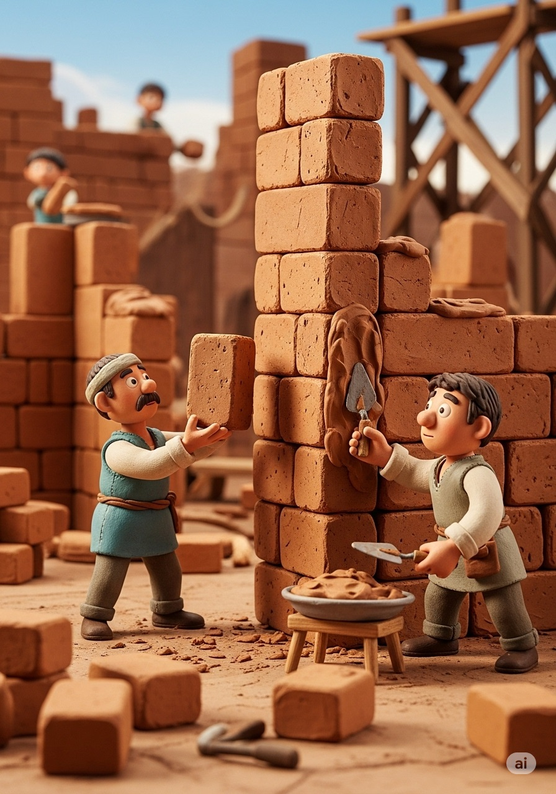

-
The Emperor's New City
written by Panagiotis Domvros
-
Emperor Constantine stood on a balcony in Rome. The city was magnificent, filled with history and marble, but it felt old. Its streets were a crowded maze, and its heart seemed to beat just a little slower than it used to.
-
"The Roman Empire is vast," he thought to himself. "It needs a new heart, a new, vibrant beginning." The next day, Constantine summoned his wisest architect. He unrolled a large map across a polished table. "The Empire needs a capital that looks to the future," the Emperor said, his finger tracing the line where land met sea.
-
Constantine chose the perfect spot: the ancient Greek city of Byzantium. It sat on a strategic peninsula with the sea on two sides, making it easy to defend and perfect for ships arriving from all corners of the world. He announced his grand plan to the people of Rome.
-
In a bustling Roman market, a young woman named Livia heard the news. "A new capital?" she whispered to her father, a potter. "Leave Rome?" The idea was as big and daunting as the Colosseum itself. But it was also a spark of something new and exciting.
-
Emperor Constantine sailed across the sea to Byzantium. When he arrived, he stood on a green hill overlooking the sparkling blue water. "Yes," he said to his architect, who stood beside him. "This is the place. Here we will build our new Rome, a city of light."
-

Soon, the quiet hills were buzzing with activity. Thousands of workers arrived. They dug deep foundations, laid enormous stones, and raised mighty walls that touched the sky. The new city began to rise from the earth, brick by clay brick.
-
The architect showed the Emperor the plans for grand churches with soaring domes, wide avenues for parades, and a magnificent palace overlooking the sea. "It will be a beacon for the whole Empire," the architect explained, his eyes shining with pride.
-
Back in Rome, Livia and her family packed their belongings onto a sturdy wooden cart. They were leaving the only home they had ever known, but their hearts were filled with hope for the future in the Emperor's new city.
-
At last, the city was ready. It was named Constantinople, the City of Constantine. It was more glorious than anyone had dreamed. Arriving by boat, Livia and her father stared in wonder at the tall, gleaming columns and the great dome of a new church glittering in the sun.
-
Emperor Constantine stood before the people in the grand new Hippodrome. "This is our new capital!" he declared, his voice echoing through the massive arena. "A new center for our Empire, a bridge between two worlds, a city for the ages!" And a new chapter for Rome had begun.
Practice
1. Who first wanted to build the "Great Church" on the site of Hagia Sophia?
2. Who rebuilt Hagia Sophia with its massive, "floating" dome after it was destroyed?
3. What did Sultan Mehmed II do after conquering the city?
4. What are the tall, slender towers added to the building called?
5. In the 20th century, the leaders of the new country of Turkey turned Hagia Sophia into a...
True or False
1. The original church was destroyed by an earthquake.
2. For nearly 1,000 years, Hagia Sophia was the world's largest cathedral.
3. When it was converted to a mosque, all Christian mosaics were destroyed.
4. The story is being told by a grandfather named Alexios to his grandson Marios.
5. The most recent change to the building was turning it back into a museum.
Vocabulary Matching
Match each word with its correct definition:
Further Reading
Long before Justinian's masterpiece rose above the skyline, Emperor Constantine the Great set the stage for Hagia Sophia's story. In 330 CE, Constantine chose the ancient city of Byzantium as the new capital of the Roman Empire and renamed it Constantinople. To honor Christian faith and imperial power, he commissioned a grand church dedicated to "Holy Wisdom" (Hagia Sophia), laying its foundations soon after. Although that original basilica wasn't completed until 360 CE—under his nephew, Constantius II—Constantine's vision established the site's sacred importance.
Over the next two centuries, two more churches rose and fell on the same spot: one rebuilt by Emperor Theodosius II around 415 CE after riots and another erected in 532 CE that was almost immediately destroyed during the Nika Revolt. Each reconstruction reused columns and marble from pagan temples across the empire, embedding layers of history into every stone.
When Emperor Justinian I came to power, he resolved to create a church worthy of Constantinople's glory. Between 532 and 537 CE, architects Anthemius of Tralles and Isidore of Miletus assembled tens of thousands of workers to erect the soaring dome—31 meters across—supported by four revolutionary pendentives. The completed Hagia Sophia combined Constantine's foundational ambition with centuries of rebuilds, resulting in the vast, light-filled basilica that has stood as an architectural marvel for nearly fifteen hundred years.